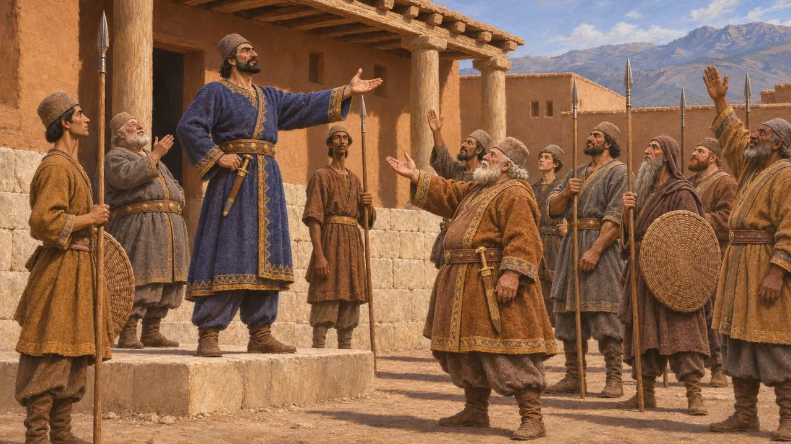
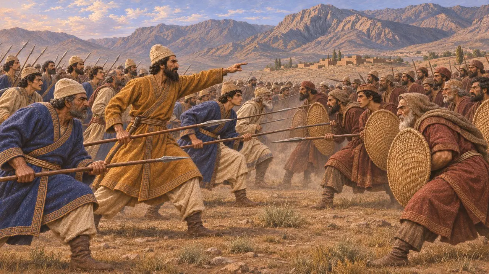
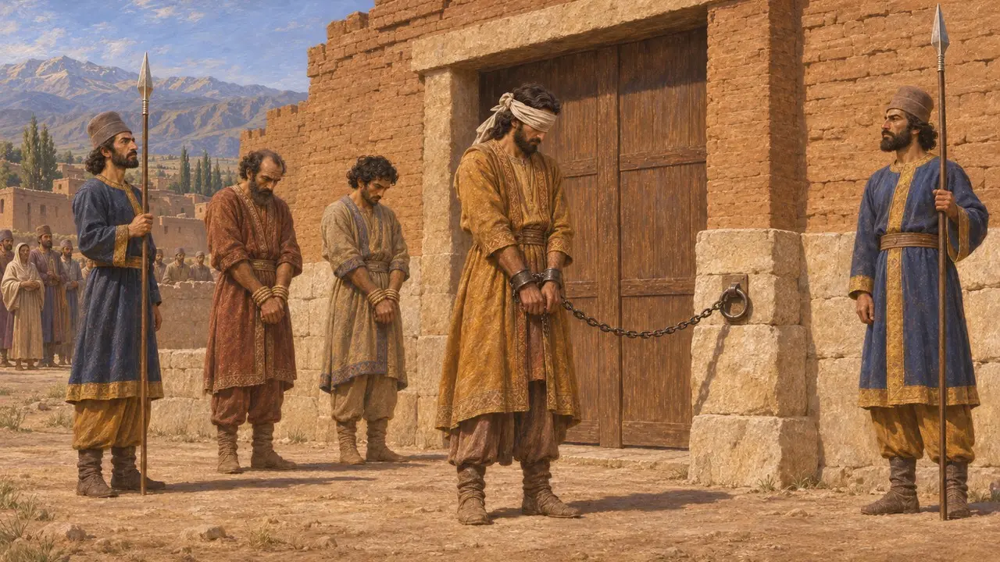
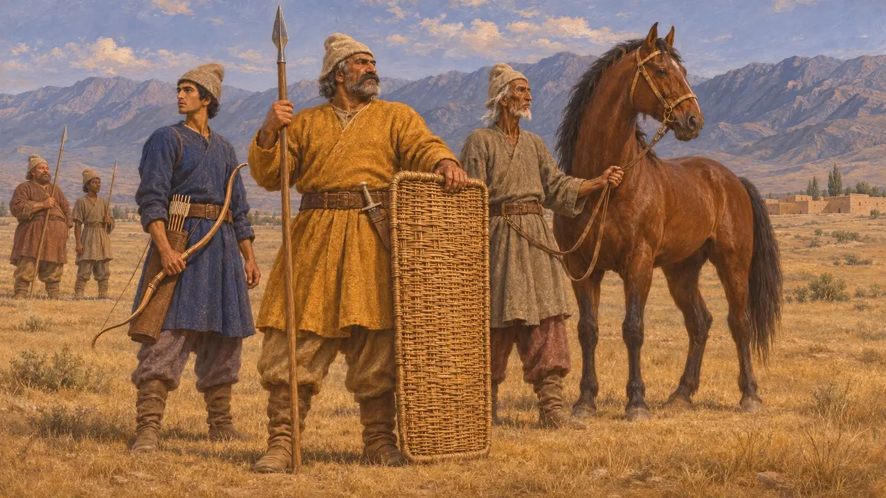
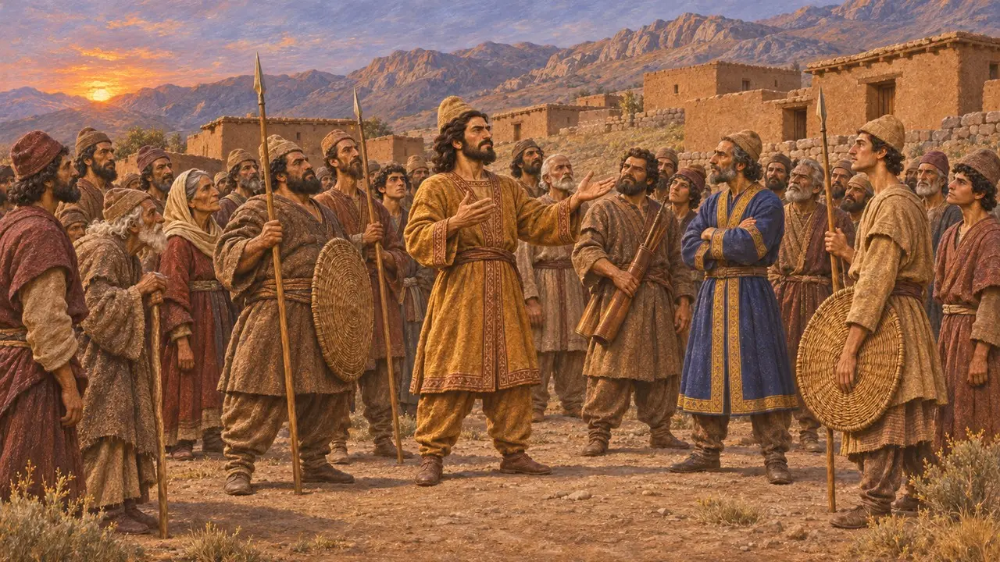

米底叛军
公元前522—前521年米底反抗大流士时弗拉瓦尔提什的追随者
公元前522年末，大流士夺取王位后不久，一个名叫弗拉瓦尔提什的米底人自称是古代米底王库阿克撒列斯的后裔，在米底掀起叛乱。他的追随者先后与大流士的将领乃至国王本人交战，最终于公元前521年被镇压。史学家认为，在大流士于贝希斯敦所记载的诸多叛乱中，米底起义是最为危险的之一，因为米底是帝国的核心地区之一。
游戏中： 在巴加斯塔纳和帕尔萨，米底叛军以长矛兵、弓箭手、队长、弗拉瓦尔提什的勇士以及参与袭扰的尼萨骑射手的形象出现。勇士和队长为游戏虚构，贝希斯敦铭文并未提及此类人物。

弗拉瓦尔提什举米底而叛
见于史载大流士说，一个名叫弗拉瓦尔提什的米底人在米底起事，告诉民众他是基亚克萨雷斯家族的赫沙特里塔。留在本土的米底民众（很可能指宫中的部队）倒向了他，他便在米底称王。帕提亚和希尔卡尼亚随即也宣布拥护他，大流士之父希斯塔斯普不得不在那里作战。
Behistun inscription, DB §24, §35

马鲁什与昆杜鲁之战
见于史载大流士派叙达尔涅斯（维达尔纳）率领一支忠于他的波斯人和米底人军队出征，因此双方阵中都有米底人。叙达尔涅斯在米底的马鲁什与叛军交战，随后在坎潘达地区等候国王。大流士从巴比伦进军，于公元前521年在昆杜鲁击败弗拉瓦尔提什。铭文的巴比伦语版本还补充了这些战役的伤亡数字。
Behistun inscription, DB §25, §31

埃克巴坦那的惩处
见于史载弗拉瓦尔提什率少数骑兵向拉加逃窜，但遭擒获。大流士自称割去其鼻、耳与舌，剜去一目，将他锁在宫门示众，随后在埃克巴坦那将其处以穿刺之刑，并把他的主要追随者吊死于当地要塞。一个名叫契桑塔赫马的萨加尔提亚人同样自称出自基亚克萨雷斯一系，在阿尔贝拉被处以穿刺之刑。弗拉瓦尔提什的形象就在贝希斯敦浮雕上被缚的叛军之列。
Behistun inscription, DB §32-33

米底人如何作战
古代记述希罗多德记载，米底人的装备与波斯人相同：头戴毡帽，身穿短袍，手持柳条盾、短矛、弓与短剑；他还说，这身装束其实是波斯人从米底人那里学来的。他也提到了米底尼萨平原上所育的高头大马。不过，他描述的是约四十年后薛西斯的大军，而非这场叛乱本身。
Herodotus 7.40; Herodotus 7.61-62

叛军是些什么人
争夺中希罗多德只简略提到米底人后来反叛大流士并被击败。弗拉瓦尔提什究竟真是旧王室后裔还是仅仅假借其名，米底贵族中有多少人支持他，大流士铭文中的各战役日期又如何与他“一年之内打了19场战役”的说法相吻合，史学家至今仍有争论。所有详细信息都出自胜利者本人的记述。
Herodotus 1.130; P. Briant, From Cyrus to Alexander, 2002
来源
- Behistun inscription, DB §24-35
- R. Schmitt, The Bisitun Inscriptions of Darius the Great: Old Persian Text, 1991
- Herodotus 1.130; 7.40; 7.61-62
- A. Kuhrt, The Persian Empire: A Corpus of Sources from the Achaemenid Period, 2007
- P. Briant, From Cyrus to Alexander, 2002